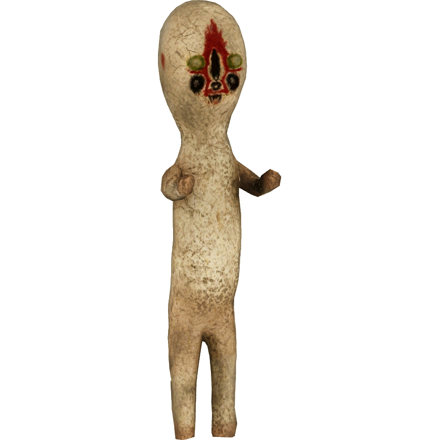
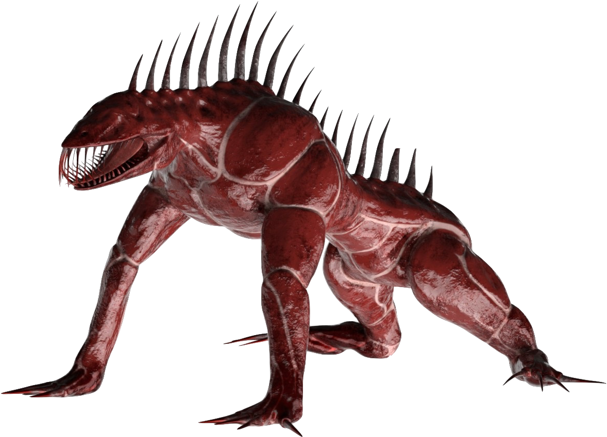
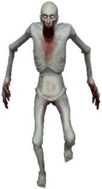
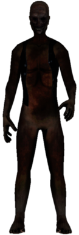
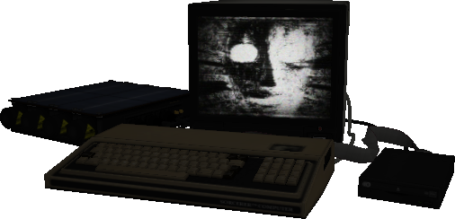

SCP Skepnurnar
SCP-173

Class:
Euclid
Description:
hnetu stytta.
Attack:
SCP-173 er skepna sem frís þegar er horft á hana en hún færist á miklum hraða þegar enginn horfir og reynir að komast að aftan til að brjóta hálsinn eða til að kirkja mann.
Containment:
fólkið setti SCP-173 inn í styrkt herbergi sem eina leið til að komast út úr er að opna stóru járn hurðirnar, til að komast inn þarf a.m.k þrjá menn sem þurfa að horfa á SCP-173 og segja hvort öðrum hvenær þeir blikka, annars deir einn í einu þangað til að það verður opnað fyrir þá eða að þeir deyja allir.
SCP-939

Class:
Keter
Description:
hundur á sterum.
Attack:
SCP-939 lokkar fólk með því að nota raddir á fólki sem það hefur étið fyrr.
Containment:
SCP-939 er geymd í stóru búri sem er kælt til 16°C með 100% raka því að það hægir á henni og búrið er með 10cm rúðu með 100kV rafmagns neti á milli svo að ef skeppnan reynir að brjótast í gegn þá deyr hún.
SCP-096

Class:
Euclid
Description:
Hávaxin, mjög grannur, alveg hvítur, hárlaus.
Attack:
Ef maður horfir beint á hana, í gegnum vídeo eða ef maður sér mynd af skeppnuni þá brjálast hún og hleypur beint á eftir manni til að rífa mann í sundur.
Containment:
5x5x5 metra herbergi sem er loftþétt og með enga sjón á skeppnuni, til að vita hvort skeppnan er enþá inni nota menn þrystingar skinjara og laser skynjara.
SCP-106

Class:
Keter
Description:
lítur eins og gamall svartur maður.
Attack:
SCP-106 reynir að komast að fólki til að taka þau með sér í heiminn sinn þar sem hann hefur fulla stjórn og hendir þeim út eftir einhvern tíma hvort sem þau eru lifandi eða dauð.
Containment:
SCP-106 er geymt í fljótandi kassa með 16 lög af blý með vökva á milli, blýið hægir á SCP-106 og vökvinn ruglar skeppnuna.
SCP-049

Class:
Euclid
Description:
lítur út eins og læknir frá miðalda plága nema gríman er partur af líkamanum hans.
Attack:
þegar SCP-049 snertir mann deyr maður innan við eina sekúndu svo reynir hann að lífga manni til að losna við "pestelence"
Containment:
SCP-049 er geymd í venjulegum klefa.
SCP-079
